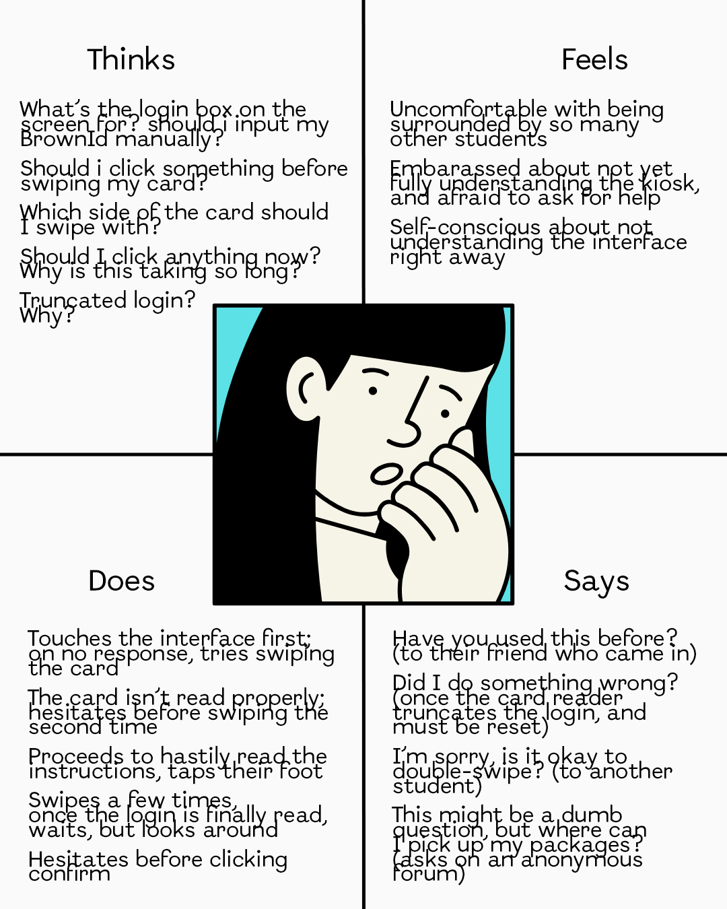

...Questions asked...

...OBSERVATIONS...
Retrieved by observing 5+ students at Brown University using the Mail Room Kiosk to craft personas for interface evaluation.
...PERSONAS...
Crafted based on interviews and observations to provide realistic representations of different user types,
allowing for more user-centered design decisions and a better understanding of their needs, behaviors, and
pain points.
Anxious Amber
A nervous freshman, new to the mail room kiosk, unsure about the process and uncomfortable with asking for help.
Interface Problems: Lack of guidance on how to use the car reader properly. Confusing badges prohibiting from swiping the card twice (despite it often being the only way for the system to work). Unclear feedback when the card reader fails to recognize the Brown ID. Slow response times, leading to confusion. Lack of guidance on where to pick up the packages upon confirming.
Efficient Jamie
A busy, but confident senior juggling multiple responsibilities and rushing to complete tasks, well-acquainted with the mail room kiosk.
Interface Problems: Poor card reader design (mounted on only one side and uncomfortable to use). Unreliability of the reading system (doesn't always work on one swipe). Slow response times, the need for subsequent confirmation.